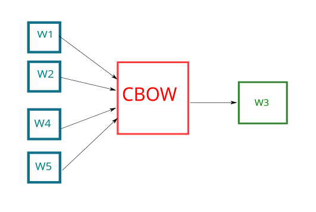
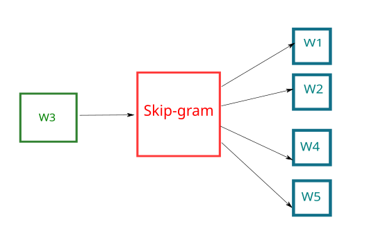
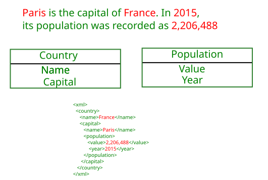
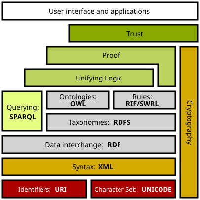

Intelligence artificielle et Deep Learning
L'IA symbolique et certaines applications
John Samuel
CPE Lyon
Année: 2026-2027
Courriel: john.samuel@cpe.fr

John Samuel
CPE Lyon
Année: 2026-2027
Courriel: john.samuel@cpe.fr
Le traitement automatique des langues (TAL) est un domaine interdisciplinaire de la linguistique informatique qui se concentre sur l'analyse et la compréhension du langage naturel (celui utilisé par les humains). Cette section aborde plusieurs aspects clés du TAL, notamment :
Quelques exemples d'issues potentiellement non valides :
L'objectif est de réduire les mots à leur forme de base ou racine, en éliminant les suffixes, ce qui permet de regrouper différentes formes d'un mot sous une forme commune.
L'algorithme de Porter, également connu sous le nom de stemmer de Porter, est un algorithme de racination (stemming) développé par Martin Porter en 1980. Son objectif est de réduire les mots à leur forme racine ou base en éliminant les suffixes couramment utilisés en anglais.
L'algorithme de Porter utilise une série de règles de racination pour réduire les mots à leur forme racine. Quelques-unes des règles de l'algorithme de Porter :
from nltk.stem.porter import PorterStemmer
words = ["words", "eating", "went", "engineer", "tried"]
porter = PorterStemmer()
for word in words:
print(porter.stem(word), end=" ")
Affichage
word eat went engin tri
L'algorithme de Snowball, également connu sous le nom de Snowball stemmer, est un algorithme de racination (stemming) développé par Martin Porter comme une extension de son algorithme de Porter. Snowball a été conçu pour être plus modulaire et extensible, permettant aux utilisateurs de créer des stemmers pour différentes langues en utilisant un ensemble commun de conventions.
Les caractéristiques principales de l'algorithme de Snowball :
from nltk.stem.snowball import SnowballStemmer
words = ["words", "eating", "went", "engineer", "tried"]
snowball = SnowballStemmer("english")
for word in words:
print(snowball.stem(word))
Affichage
word eat went engin tri
Raciniser coupe des suffixes sans dictionnaire : rapide, mais « university » et « universe » donnent tous deux « univers ».
from nltk import ngrams
sentence = "He went to school yesterday and attended the classes"
for n in range(1, 5):
print("\n{}-grams".format(n))
n_grams = ngrams(sentence.split(), n)
for ngram in n_grams:
print(ngram, end=" ")
1-grams
('He',) ('went',) ('to',) ('school',) ('yesterday',) ('and',) ('attended',) ('the',) ('classes',)
2-grams
('He', 'went') ('went', 'to') ('to', 'school') ('school', 'yesterday') ('yesterday', 'and') ('and', 'attended') ('attended', 'the') ('the', 'classes')
3-grams
('He', 'went', 'to') ('went', 'to', 'school') ('to', 'school', 'yesterday') ('school', 'yesterday', 'and') ('yesterday', 'and', 'attended') ('and', 'attended', 'the') ('attended', 'the', 'classes')
4-grams
('He', 'went', 'to', 'school') ('went', 'to', 'school', 'yesterday') ('to', 'school', 'yesterday', 'and') ('school', 'yesterday', 'and', 'attended') ('yesterday', 'and', 'attended', 'the') ('and', 'attended', 'the', 'classes')
from nltk import pos_tag, word_tokenize
sentence = "He goes to school daily"
tokens = word_tokenize(sentence)
print(pos_tag(tokens))
Affichage
[('He', 'PRP'), ('goes', 'VBZ'), ('to', 'TO'), ('school', 'NN'), ('daily', 'RB')]
[('He', 'PRP'), ('goes', 'VBZ'), ('to', 'TO'), ('school', 'NN'), ('daily', 'RB')]
| Balise | Signification |
|---|---|
| PRP | pronoun, personal |
| VBZ | verb, present tense, 3rd person singular |
| TO | "to" as preposition |
| NN | "noun, common, singular or mass |
| RB | adverb |
Installation
$ pip3 install spacy
$ python3 -m spacy download en_core_web_sm
Usage
import spacy
nlp = spacy.load("en_core_web_sm")
import spacy
nlp = spacy.load("en_core_web_sm")
doc = nlp("He goes to school daily")
for token in doc:
print(token.text, token.pos_, token.dep_)
He PRON nsubj
goes VERB ROOT
to ADP prep
school NOUN pobj
daily ADV advmod
import spacy
nlp = spacy.load("en_core_web_sm")
doc = nlp("He goes to school daily")
for token in doc:
print(token.text, token.lemma_, token.pos_, token.tag_, token.dep_,
token.shape_, token.is_alpha, token.is_stop)
He -PRON- PRON PRP nsubj Xx True True
goes go VERB VBZ ROOT xxxx True False
to to ADP IN prep xx True True
school school NOUN NN pobj xxxx True False
daily daily ADV RB advmod xxxx True False
import nltk
nltk.download('punkt')
nltk.download('wordnet')
nltk.download('averaged_perceptron_tagger')
from nltk.stem import WordNetLemmatizer
sentence = "He went to school yesterday and attended the classes"
lemmatizer = WordNetLemmatizer()
for word in sentence.split():
print(lemmatizer.lemmatize(word), end=' ')
Affichage
He went to school yesterday and attended the class
from nltk.stem import WordNetLemmatizer
from nltk import word_tokenize, pos_tag
from nltk.corpus import wordnet as wn
# Check the complete list of tags http://www.nltk.org/book/ch05.html
def wntag(tag):
if tag.startswith("J"):
return wn.ADJ
elif tag.startswith("R"):
return wn.ADV
elif tag.startswith("N"):
return wn.NOUN
elif tag.startswith("V"):
return wn.VERB
return None
lemmatizer = WordNetLemmatizer()
sentence = "I went to school today and he goes daily"
tokens = word_tokenize(sentence)
for token, tag in pos_tag(tokens):
if wntag(tag):
print(lemmatizer.lemmatize(token, wntag(tag)), end=' ')
else:
print(lemmatizer.lemmatize(token), end=' ')
Affichage
I go to school today and he go daily
Lemmatiser rend le mot du dictionnaire (« était » → « être ») ; il faut connaître la catégorie grammaticale, donc étiqueter d'abord.
import spacy
nlp = spacy.load("en_core_web_sm")
doc = nlp("I went to school today and he goes daily")
for token in doc:
print(token.lemma_, end=' ')
-PRON- go to school today and -PRON- go daily
import spacy
from spacy import displacy
nlp = spacy.load("en_core_web_sm")
doc = nlp("He goes to school daily")
displacy.render(doc, style="dep", jupyter=True)
Les embeddings de mots sont une technique d'apprentissage de caractéristiques où des mots ou des phrases du vocabulaire sont associés à des vecteurs de nombres réels.
Avantages de Word Embeddings
Applications de Word Embeddings
Limite : un vecteur unique par mot, quel que soit le contexte (« avocat » le fruit ou le métier). Les embeddings contextuels produits par les Transformers (BERT, voir 4.7) donnent un vecteur différent à chaque occurrence et ont supplanté les embeddings statiques depuis 2018.
spaCy est une bibliothèque open-source pour le traitement du langage naturel (NLP) en Python. Elle offre des outils performants et efficaces pour effectuer diverses tâches de traitement du langage naturel, de l'analyse syntaxique à la reconnaissance d'entités nommées. spaCy est conçu pour être rapide, précis et facile à utiliser.
spaCy propose différents modèles linguistiques pré-entraînés pour différentes langues et tâches. Le modèle en_core_web_lg est un modèle vectoriel large d'anglais.
$ python3 -m spacy download en_core_web_lg
import spacy
# Charger le modèle spaCy
nlp = spacy.load("en_core_web_lg")
Avantages de spaCy :
Limites de spaCy :
import spacy
# Charger le modèle spaCy
nlp = spacy.load("en_core_web_lg")
# Définir les mots à comparer
words_to_compare = ["dog", "cat", "apple"]
# Calculer la similarité entre les paires de mots
for i in range(len(words_to_compare)):
for j in range(i + 1, len(words_to_compare)):
word1, word2 = words_to_compare[i], words_to_compare[j]
doc1, doc2 = nlp(word1), nlp(word2)
similarity_score = doc1.similarity(doc2)
print("Similarité ({} / {}): {:.4f}".format(word1, word2,
similarity_score))
Similarité (dog / cat): ...
Similarité (dog / apple): ...
Similarité (cat / apple): ...
import spacy
# Charger le modèle spaCy
nlp = spacy.load("en_core_web_sm")
# Texte à analyser
text_to_analyze = "cat"
doc = nlp(text_to_analyze)
# Imprimer les vecteurs de chaque jeton sur une seule ligne
vector_list = [token.vector for token in doc]
print("Vecteurs de '{}' : {}".format(text_to_analyze, vector_list))
Un mot = un vecteur ; la similarité cosinus entre vecteurs approxime la similarité de sens.
Word2Vec a marqué un tournant significatif dans la représentation des mots dans le domaine de l'apprentissage automatique.
L'implémentation de Word2Vec se déroule en plusieurs étapes :
CBOW est un modèle spécifique de Word2Vec. Dans ce modèle, la prédiction du mot courant se fait en utilisant une fenêtre de mots contextuels voisins. L'ordre des mots de contexte n'influence pas la prédiction, ce qui en fait une approche robuste.

import gensim
from nltk.tokenize import sent_tokenize, word_tokenize
# Données d'exemple
data = "This is a class. This is a table"
# Prétraitement des données en utilisant nltk pour obtenir des phrases et des mots
sentences = [word_tokenize(sentence.lower()) for sentence in sent_tokenize(data)]
# Construction du modèle CBOW avec Gensim
# min_count: Ignorer tous les mots dont la fréquence totale est inférieure à cette valeur.
# vector_size: Dimension des embeddings de mots
# window: Distance maximale entre le mot courant et le mot prédit dans une phrase
cbow_model = gensim.models.Word2Vec(sentences, min_count=1, vector_size=100,
window=3, sg=0)
# Affichage du vecteur du mot "this"
print("Vecteur du mot 'this':", cbow_model.wv["this"])
# Similarité entre les mots "this" et "class"
print("Similarité entre 'this' et 'class':", cbow_model.wv.similarity("this",
"class"))
# Prédiction des deux mots les plus probables suivant le mot "is"
predicted_words = cbow_model.wv.most_similar(positive=["is"], topn=2)
print("Prédiction des mots suivant 'is':", predicted_words)
Le modèle Skip-gram est une autre variante de Word2Vec qui se concentre sur la prédiction de la fenêtre voisine des mots de contexte à partir du mot courant.

import gensim
from nltk.tokenize import sent_tokenize, word_tokenize
# Données d'exemple
data = "This is a class. This is a table"
# Prétraitement des données en utilisant nltk pour obtenir des phrases et des mots
sentences = [word_tokenize(sentence.lower()) for sentence in sent_tokenize(data)]
# Construction du modèle Skip-gram avec Gensim
# min_count: Ignorer tous les mots dont la fréquence totale est inférieure à cette valeur.
# vector_size: Dimension des embeddings de mots
# window: Distance maximale entre le mot courant et le mot prédit dans une phrase
# sg: 1 pour skip-gram ; sinon CBOW.
skipgram_model = gensim.models.Word2Vec(sentences, min_count=1, vector_size=100,
window=5, sg=1)
# Affichage du vecteur du mot "this"
print("Vecteur du mot 'this':", skipgram_model.wv["this"])
# Similarité entre les mots "this" et "class"
print("Similarité entre 'this' et 'class':", skipgram_model.wv.similarity("this", "class"))
# Prédiction des mots les plus probables dans le contexte entourant le mot "is"
predicted_words = skipgram_model.wv.most_similar(positive=["is"], topn=2)
print("Prédiction des mots dans le contexte de 'is':", predicted_words)
CBOW prédit le mot à partir du contexte, skip-gram le contexte à partir du mot ; les vecteurs sont un sous-produit de cette tâche.
La Reconnaissance d'Entités Nommées (NER) consiste à identifier et classer des entités spécifiques dans un texte. Ces entités peuvent inclure des personnes, des lieux, des organisations, des dates, des montants monétaires, etc. Le but est d'extraire des informations structurées à partir de données textuelles non structurées.

La Reconnaissance d'Entités Nommées (NER) est souvent réalisée à l'aide de modèles d'apprentissage automatique, et plusieurs algorithmes peuvent être utilisés dans ce contexte. Quelques-uns des algorithmes couramment employés :
import spacy
# Charger le modèle spaCy
nlp = spacy.load("en_core_web_sm")
# Texte à analyser
text_to_analyze = "Paris is the capital of France." + "In 2015, its population was recorded as 2,206,488"
# Analyser le texte
doc = nlp(text_to_analyze)
# Afficher les informations sur les entités
for entity in doc.ents:
entity_text = entity.text
start_char = entity.start_char
end_char = entity.end_char
label = entity.label_
print("Entité: {}, Début: {}, Fin: {}, Catégorie: {}".format(entity_text,
start_char, end_char, label))
Entité: Paris, Début: 0, Fin: 5, Catégorie: GPE
Entité: France, Début: 24, Fin: 30, Catégorie: GPE
Entité: 2015, Début: 35, Fin: 39, Catégorie: DATE
Entité: 2,206,488, Début: 72, Fin: 81, Catégorie: CARDINAL
import spacy
from spacy import displacy
def visualize_entities(text):
# Charger le modèle spaCy
nlp = spacy.load("en_core_web_sm")
# Analyser le texte
doc = nlp(text)
# Visualiser les entités nommées avec displaCy
displacy.serve(doc, style="ent")
# Texte à analyser et visualiser
text_to_analyze = "Paris is the capital of France." + "In 2015, its population was recorded as 2,206,488"
# Appeler la fonction pour analyser et visualiser les entités
visualize_entities(text_to_analyze)
import spacy
from spacy import displacy
def visualize_entities(text):
# Charger le modèle spaCy
nlp = spacy.load("en_core_web_sm")
# Analyser le texte
doc = nlp(text)
# Visualiser les entités nommées avec displaCy
displacy.render(doc, style="ent", jupyter=True)
# Texte à analyser et visualiser
text_to_analyze = "Paris is the capital of France. In 2015, its population was recorded as 2,206,488"
# Appeler la fonction pour analyser et visualiser les entités
visualize_entities(text_to_analyze)
| Balise | Signification |
|---|---|
| GPE | Pays, villes, états. |
| DATE | Dates ou périodes absolues ou relatives |
| CARDINAL | Les chiffres qui ne correspondent à aucun autre type. |
La NER étiquette chaque token (B-PER, I-PER, O…) : un problème de séquence, d'où les RNN puis BERT.
Le lexique VADER (Valence Aware Dictionary and sEntiment Reasoner) est spécifiquement conçu pour analyser les sentiments dans du texte en attribuant des scores de positivité, négativité et neutralité aux mots ainsi qu'aux expressions.
import nltk
nltk.download('vader_lexicon')
VADER est une bibliothèque d'analyse de sentiment conçue pour évaluer le sentiment d'un morceau de texte, généralement une phrase ou un paragraphe.
VADER est souvent utilisé pour l'analyse de sentiment rapide et basée sur des règles. Bien qu'il soit efficace dans de nombreux cas, il peut ne pas être aussi précis que des méthodes plus complexes basées sur l'apprentissage automatique, notamment dans des contextes où l'analyse nécessite une compréhension plus profonde du langage et de la syntaxe.
from nltk.sentiment.vader import SentimentIntensityAnalyzer
sia = SentimentIntensityAnalyzer()
sentiment = sia.polarity_scores("this movie is good")
print(sentiment)
sentiment = sia.polarity_scores("this movie is not very good")
print(sentiment)
sentiment = sia.polarity_scores("this movie is bad")
print(sentiment)
Les scores renvoyés par VADER représentent différentes mesures du sentiment dans un texte. Une explication de chaque score :
Les scores sont normalisés dans une échelle de -1 à 1, où -1 représente un sentiment extrêmement négatif, 1 représente un sentiment extrêmement positif, et 0 représente la neutralité. Les scores peuvent être interprétés individuellement ou conjointement pour obtenir une compréhension complète du sentiment dans le texte analysé.
Affichage
{'neg': 0.0, 'neu': 0.508, 'pos': 0.492, 'compound': 0.4404}
{'neg': 0.344, 'neu': 0.656, 'pos': 0.0, 'compound': -0.3865}
{'neg': 0.538, 'neu': 0.462, 'pos': 0.0, 'compound': -0.5423}
VADER est un lexique de règles ; un Transformer pré-entraîné (ici DistilBERT fine-tuné sur des critiques de films, voir 4.7) juge la phrase entière en contexte :
from transformers import pipeline
modele = "distilbert-base-uncased-finetuned-sst-2-english"
classifier = pipeline("sentiment-analysis", model=modele)
print(classifier("this movie is good"))
# [{'label': 'POSITIVE', 'score': 0.9998}]
print(classifier("this movie is not very good"))
# [{'label': 'NEGATIVE', 'score': 0.9995}]
VADER : rapide et transparent ; Transformer : plus précis et multilingue, mais opaque et coûteux.
La traduction automatique est le processus d'utilisation de logiciels pour traduire un texte ou un discours d'une langue à une autre. Il existe plusieurs approches pour aborder ce problème complexe :
Chaque ère a remplacé la précédente en apprenant davantage à partir des données et en écrivant moins de règles à la main.
L'approche machine dans la traduction automatique fait référence à l'utilisation de techniques d'apprentissage machine, en particulier d'algorithmes d'apprentissage automatique, pour automatiser le processus de traduction entre langues. Cette approche a considérablement évolué avec le développement de modèles plus avancés basés sur l'apprentissage profond, notamment les modèles de séquence à séquence.
Traduire = encoder la source, décoder la cible ; l'attention décide, pour chaque mot produit, quels mots sources regarder.
Le Transformer est une architecture de réseau de neurones qui a révolutionné le domaine du traitement du langage naturel depuis son introduction par Vaswani et al. en 2017. Deux des modèles les plus célèbres basés sur l'architecture Transformer sont :
Même brique (attention multi-tête), trois masques : BERT voit toute la phrase, GPT ne voit que le passé, l'encodeur-décodeur lit la source en entier et écrit la cible mot à mot.
BERT, développé par Google, est un modèle pré-entraîné qui a été formé sur de vastes corpus de texte. Ce qui distingue BERT, c'est son approche bidirectionnelle pour la représentation des mots. Contrairement à des modèles précédents qui utilisaient une compréhension unidirectionnelle du contexte, BERT prend en compte le contexte à la fois avant et après un mot dans une phrase, améliorant ainsi la compréhension du sens.
Un modèle BERT (Bidirectional Encoder Representations from Transformers) est composé de plusieurs éléments clés, reflétant l'architecture Transformer. Les composants principaux d'un modèle BERT :
GPT, développé par OpenAI, est un modèle basé sur l'architecture Transformer, mais avec une approche de génération de texte. GPT utilise un modèle de langage pré-entraîné qui a appris à prédire le mot suivant dans une séquence de mots. Il est capable de générer du texte cohérent et contextuellement approprié.
Le modèle GPT (Generative Pre-trained Transformer) est composé de plusieurs éléments clés qui suivent l'architecture Transformer. Les composants principaux de GPT :
| Caractéristique | BERT | GPT |
|---|---|---|
| Objectif du Pré-entraînement | Prédiction bidirectionnelle des mots (MLM) et prédiction de relation entre deux phrases (NSP) | Génération de texte autoregressive |
| Architecture | Encodeur seul (bidirectionnel) | Décodeur seul (attention masquée, auto-régressif) |
| Utilisation en Fine-Tuning | Classification de texte, extraction d'entités nommées, etc. | Génération de texte, complétion automatique, etc. |
| Caractéristique | BERT | GPT |
|---|---|---|
| Approche du Contexte | Bidirectionnelle, prend en compte le contexte avant et après chaque mot | Autoregressive, génère du texte séquentiellement en utilisant le contexte précédent |
| Applications Pratiques | Classification, extraction d'entités, détection de paraphrases | Génération de texte, complétion automatique, conversation naturelle |
| Taille des Modèles | Généralement plus petits (BERT-base : 110 millions de paramètres) | Beaucoup plus grands : GPT-3 (2020) 175 milliards ; modèles récents (GPT-4/5, Llama, Mistral, Claude…) de quelques milliards à plus de 1 000 milliards |
Encodeur seul (BERT) pour comprendre, décodeur seul (GPT) pour générer, encodeur-décodeur (T5, BART) pour traduire.
Le système de recommandation est un domaine essentiel de l'informatique qui vise à réduire la surcharge d'informations en fournissant des suggestions filtrées et pertinentes aux utilisateurs.
Réduction de la surcharge d'informations : Les systèmes de recommandation visent à aider les utilisateurs à naviguer à travers une grande quantité d'informations en fournissant des recommandations ciblées et adaptées à leurs préférences.
Les individus suivent souvent les recommandations des autres utilisateurs. Cela suppose que les préférences et les actions des utilisateurs peuvent être des indicateurs fiables pour recommander des articles ou des objets similaires à d'autres utilisateurs.
Le filtrage collaboratif basé sur les transactions implique l'analyse des transactions entre utilisateurs et articles pour générer des recommandations.
Le filtrage collaboratif basé sur le contenu repose sur la description des objets et le profil des intérêts de l'utilisateur.
Les recommandations à haut risque se réfèrent à des domaines où les conséquences d'une recommandation incorrecte ou inappropriée peuvent être significatives.
Assurance : Les recommandations dans le domaine de l'assurance peuvent avoir des implications financières importantes. Par exemple, une recommandation inappropriée en matière d'assurance pourrait entraîner des conséquences financières négatives pour l'utilisateur.
Les systèmes de recommandation à haut risque devraient intégrer des capacités d'explication, permettant de fournir des justifications claires pour chaque recommandation.
Collaboratif : « les gens comme vous ont aimé » ; contenu : « ressemble à ce que vous aimez » ; le réel combine les deux.
La Représentation des connaissances et raisonnement (KRR) constituent un domaine clé de l'intelligence artificielle. La KRR est largement utilisée dans des domaines tels que la planification, la représentation du langage naturel, la gestion des connaissances, les systèmes experts, etc.
La représentation des connaissances implique la création d'une représentation lisible par machine de la connaissance d'un monde ou d'un domaine particulier. Cela vise à permettre aux systèmes informatiques de comprendre, interpréter et raisonner sur l'information.
Le raisonnement consiste à déduire de nouvelles informations à partir des connaissances existantes. C'est le processus par lequel les systèmes tirent des conclusions logiques.
Expressivité contre efficacité : le formalisme le plus riche n'est pas celui qu'on peut interroger le plus vite.

Le Semantic Web Stack, également connu sous le nom de pile sémantique, représente une série de technologies et de standards interconnectés qui ont été développés pour réaliser la vision du World Wide Web sémantique. Cette vision, initiée par Tim Berners-Lee, vise à rendre le contenu du web plus compréhensible par les machines en ajoutant une sémantique aux données, permettant ainsi une meilleure interopérabilité et une utilisation plus avancée des informations sur le web.
Les principales couches de la pile sémantique (du bas vers le haut) :
En utilisant cette pile sémantique, le World Wide Web sémantique vise à créer une infrastructure où les machines peuvent comprendre, interpréter et exploiter le contenu du web de manière plus avancée, ouvrant ainsi la porte à de nombreuses applications intelligentes et à une meilleure interconnexion des données.
RDF pour les faits, RDFS/OWL pour le vocabulaire, SPARQL pour interroger : Wikidata en est l'exemple grandeur nature.
Un moteur de règles, également connu sous le nom de moteur d'inférence, est un composant logiciel qui traite et applique un ensemble de règles et de contraintes définies.
Les moteurs de règles sont largement utilisés dans divers domaines, tels que la gestion des workflows, la logique métier, les systèmes d'alerte, et d'autres applications où des règles spécifiques doivent être appliquées pour maintenir la cohérence et automatiser les processus. Ils offrent une approche déclarative pour spécifier la logique métier sans nécessiter une programmation explicite.
Un moteur de règles sépare le « quoi » (règles métier, modifiables) du « comment » (l'algorithme d'inférence).
La programmation logique, en particulier la logique propositionnelle et la logique du premier ordre (FOL), joue un rôle fondamental dans le domaine de l'intelligence artificielle.
Prolog (Programming in Logic) est un langage de programmation déclaratif, basé sur la logique du premier ordre.
En Prolog, les types de données fondamentaux incluent les atomes, les nombres, les variables et les termes composés.
Un atome est une chaîne de caractères qui représente un nom. Il commence généralement par une lettre minuscule et peut contenir des lettres, des chiffres et des caractères de soulignement. Les atomes sont utilisés pour représenter des constantes et des noms dans Prolog.
animal(chien).
couleur(rouge).
Prolog prend en charge les entiers et les nombres à virgule flottante comme types de données numériques.
age(personne1, 23).
prix(livre1, 19.99).
Les variables sont des symboles qui représentent des valeurs inconnues. Elles commencent généralement par une lettre majuscule ou un soulignement.
personne(X).
Les termes composés sont des structures de données complexes créées à partir de foncteurs (noms de termes) et d'arguments. Ils sont utilisés pour représenter des entités composées.
point(3, 7).
livre(titre('Introduction à Prolog'), auteur('John Doe')).
Les termes composés peuvent également être utilisés pour représenter des listes, des arbres et d'autres structures de données complexes.
En Prolog, les règles sont des clauses qui définissent des relations entre différents termes. La structure générale d'une règle est la suivante :
Tête : - Corps.
En Prolog, une clause avec un corps vide est en effet appelée un fait.
personne(bob).
personne(alice).
Les faits sont des affirmations qui sont considérées comme vraies dans le monde que vous décrivez. Ces faits peuvent ensuite être utilisés dans des requêtes ou d'autres règles pour déduire des informations supplémentaires.
GNU Prolog, également connu sous le nom de gprolog, est un compilateur Prolog basé sur le standard ISO Prolog. Il est conçu pour être utilisé sur différentes plates-formes, y compris Linux, Windows et d'autres systèmes d'exploitation.
L'installation de gprolog sur une machine Ubuntu
$ sudo apt install gprolog
$ prolog
GNU Prolog 1.4.5 (64 bits)
Compiled Feb 5 2017, 10:30:08 with gcc
By Daniel Diaz
Copyright (C) 1999-2016 Daniel Diaz
| ?- [user].
compiling user for byte code...
personne(tom).
personne(alice).
user compiled, 2 lines read - 241 bytes written, 12239 ms
(4 ms) yes
| ?-
?- personne(X).
X = tom ?
yes
| ?- cat(bob).
no
| ?- [user].
compiling user for byte code...
personne(tom).
personne(alice).
personnes(L) :- findall(X, personne(X), L).
user compiled, 3 lines read - 490 bytes written, 10638 ms
yes
| ?- personnes(L).
L = [tom,alice]
yes
| ?- [user].
compiling user for byte code...
friend(bob, alice).
friend(alice, kevin).
friend(bob, thomas).
friend(bob, peter).
user compiled, 4 lines read - 486 bytes written, 77256 ms
(10 ms) yes
| ?- friend(bob, X).
X = alice ? a
X = thomas
X = peter
(1 ms) yes
$ cat friend.pl
friend(bob, alice).
friend(alice, kevin).
friend(bob, thomas).
friend(bob, peter).
human(X):-friend(X,_).
human(Y):-friend(_,Y).
$ prolog --consult-file friend.pl
GNU Prolog 1.4.5 (64 bits)
Compiled Feb 23 2020, 20:14:50 with gcc
By Daniel Diaz
Copyright (C) 1999-2020 Daniel Diaz
compiling /home/user/friend.pl for byte code...
/home/user/friend.pl compiled, 4 lines read - 515 bytes written, 22 ms
| ?- friend(bob,alice).
true ?
yes
$ prolog --consult-file friend.pl
| ?- human(X).
X = bob ? a
X = alice
X = bob
X = bob
X = alice
X = kevin
X = thomas
X = peter
yes
| ?-
$ cat ancetre.pl
/* Faits : Déclaration des relations parents */
parent(kevin, jane).
parent(kevin, jim).
parent(jane, ann).
parent(jane, bob).
parent(jim, pat).
/* Règle : X est l'ancêtre de Y si X est le parent de Y ou si X est l'ancêtre d'un parent de Y. */
ancetre(X, Y) :- parent(X, Y).
ancetre(X, Y) :- parent(X, Z), ancetre(Z, Y).
$ prolog --consult-file friend.pl
GNU Prolog 1.4.5 (64 bits)
Compiled Feb 23 2020, 20:14:50 with gcc
By Daniel Diaz
Copyright (C) 1999-2020 Daniel Diaz
/home/user/ancetre.pl compiled, 11 lines read - 1119 bytes written, 14 ms
| ?- ancetre(kevin,X).
X = jane ? a
X = jim
X = ann
X = bob
X = pat
no
| ?-
/* Faits : Déclaration des élèves et de leurs notes */
note(kevin, math, 85).
note(kevin, anglais, 90).
note(jane, math, 92).
note(jane, anglais, 88).
note(bob, math, 78).
note(bob, anglais, 85).
/* Règle : Calcul de la moyenne des notes d'un élève */
moyenne(Eleve, Moyenne) :-
findall(Note, note(Eleve, _, Note), Notes),
length(Notes, N),
somme_liste(Notes, Sum),
Moyenne is Sum / N.
/* Prédicat auxiliaire : Calcul de la somme d'une liste */
somme_liste([], 0).
somme_liste([X|Xs], Sum) :-
somme_liste(Xs, Reste),
Sum is X + Reste.
/* Règle : Affichage des élèves avec leur moyenne */
afficher_moyennes :-
setof(Eleve, Matiere^Note^(note(Eleve, Matiere, Note)), Eleves),
member(Eleve, Eleves),
moyenne(Eleve, Moyenne),
format('Élève: ~w, Moyenne: ~2f~n', [Eleve, Moyenne]),
fail.
afficher_moyennes.
$ prolog --consult-file notes.pl
GNU Prolog 1.4.5 (64 bits)
Compiled Feb 23 2020, 20:14:50 with gcc
By Daniel Diaz
Copyright (C) 1999-2020 Daniel Diaz
/home/user/notes.pl compiled, 30 lines read - 3086 bytes written, 3 ms
| ?- afficher_moyennes.
Élève: bob, Moyenne: 81.50
Élève: jane, Moyenne: 90.00
Élève: kevin, Moyenne: 87.50
(1 ms) no
| ?-
En Prolog on décrit ce qui est vrai ; l'unification et le retour arrière trouvent comment le prouver.